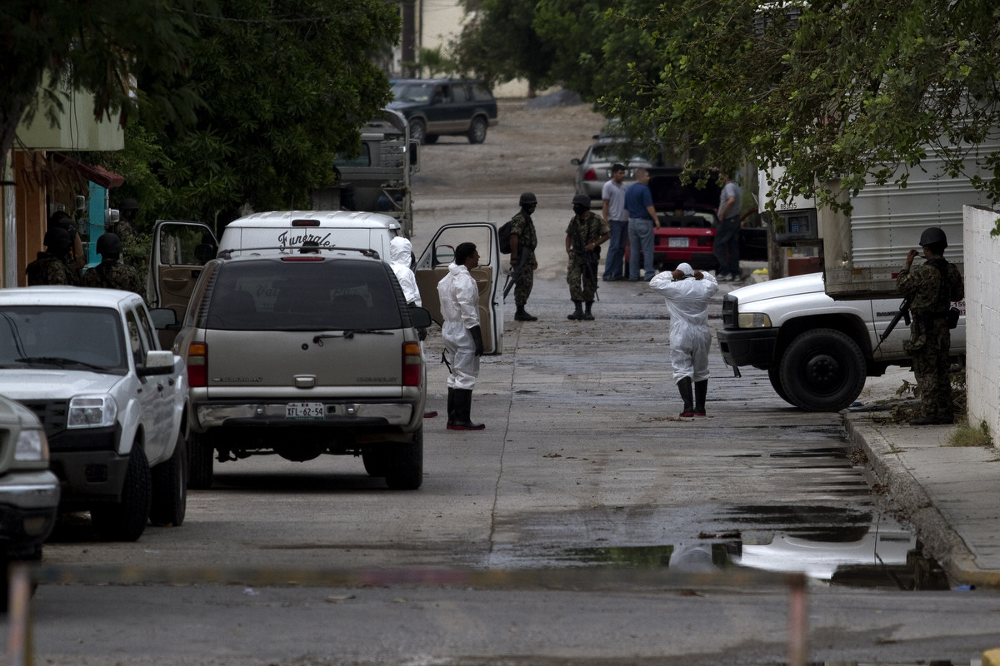

Capítulo 1
"La Masacre"
THIS ARE THE TITLES FOR THE MENU IN THIS CHAPTERLa Matanza
Los Sobrevivientes
El Hallazgo
Hipótesis
Hallazgo de la Prensa
La Matanza
Versión Oficial
{{read_file("_textos/cap1-a-oficial.md")|markdown}}Versión Embajada EUA
{{read_file("_textos/cap1-a-eua.md")|markdown}}Versión Tesís
{{read_file("_textos/cap1-a-tesis.md")|markdown}}Versión CNDH
{{read_file("_textos/cap1-a-cndh.md")|markdown}}Los Sobrevivientes
Versión Oficial
{{read_file("_textos/cap1-b-oficial.md")|markdown}}Versión Embajada EUA
{{read_file("_textos/cap1-b-eua.md")|markdown}}Versión Tesís
{{read_file("_textos/cap1-b-tesis.md")|markdown}}Versión Moore
{{read_file("_textos/cap1-b-moore.md")|markdown}} AP
AP
El Hallazgo
Versión Oficial
{{read_file("_textos/cap1-c-oficial.md")|markdown}}Versión Embajada EUA
{{read_file("_textos/cap1-c-eua.md")|markdown}}Versión Insight Crime
{{read_file("_textos/cap1-c-incrime.md")|markdown}}La Hipótesis
Versión Oficial
{{read_file("_textos/cap1-d-oficial.md")|markdown}}Versión Embajada EUA
{{read_file("_textos/cap1-d-eua.md")|markdown}}Versión Insight Crime
{{read_file("_textos/cap1-d-incrime.md")|markdown}}Versión Moore
{{read_file("_textos/cap1-d-moore.md")|markdown}}El Hallazgo en la Prensa
Versión Oficial
{{read_file("_textos/cap1-e-oficial.md")|markdown}}Versión Tésis
{{read_file("_textos/cap1-e-tesis.md")|markdown}}